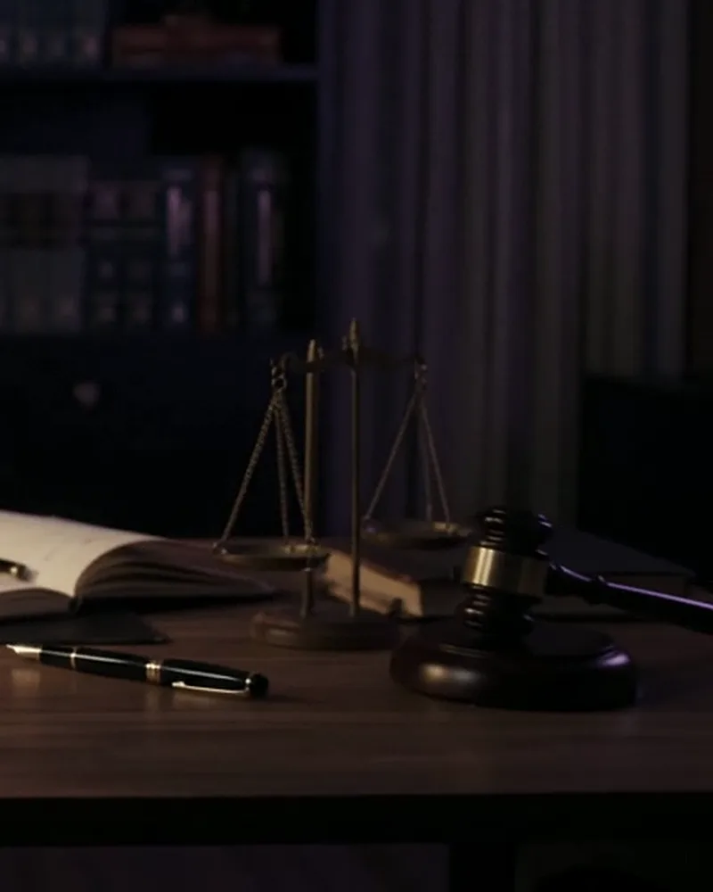
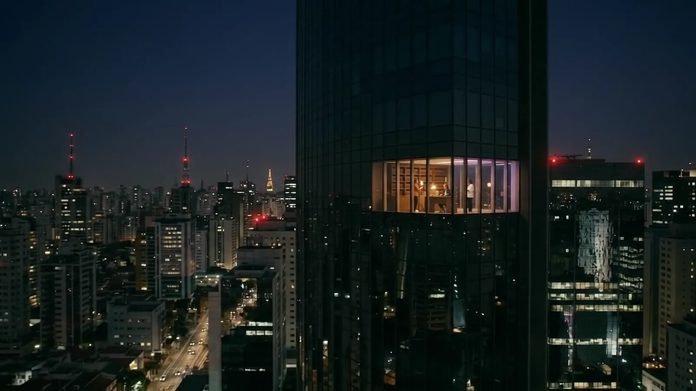
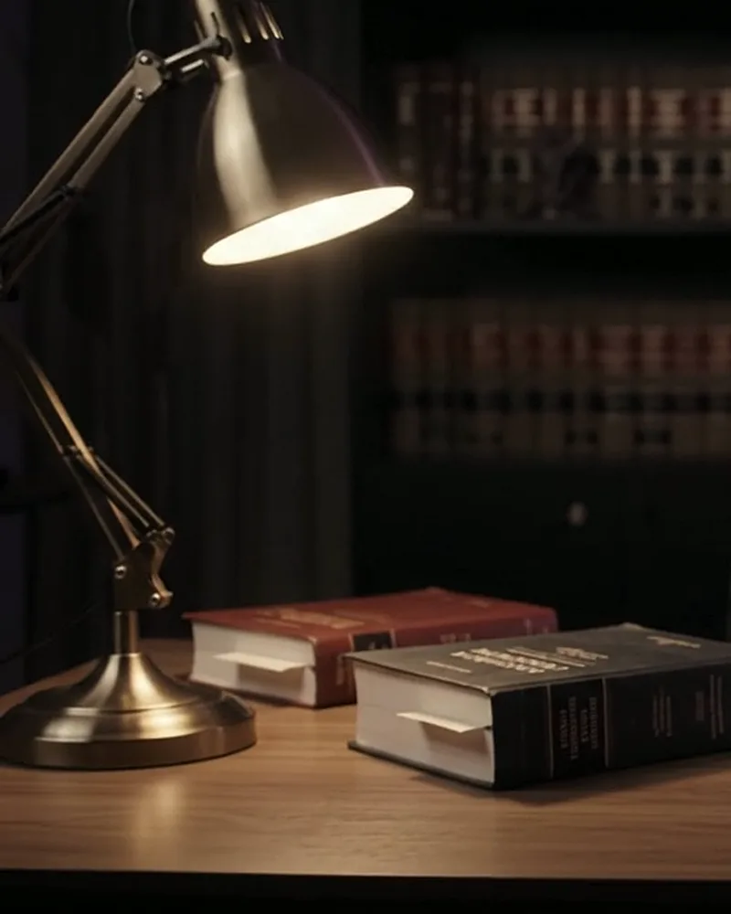

Resolução 6.074/2025
Os procedimentos de elaboração e alteração de normas regulatórias.
Para escritórios que desejam construir autoridade, reputação e crescimento sustentável.
Comunicação estratégica e ética, feita exclusivamente para a advocacia.
Seu nome chega aonde o mercado jurídico presta atenção.
Conversar com a ÁgoraA Ágora nasceu para fortalecer a reputação institucional de escritórios de advocacia, advogados e organizações do setor jurídico.
Mais do que ampliar a presença digital, desenvolvemos projetos personalizados que valorizam o posicionamento, a identidade e os objetivos de cada cliente, sempre em conformidade com os princípios éticos da advocacia.
Com atuação em todo o Brasil, reunimos experiência em branding, assessoria de imprensa, relações públicas e produção de conteúdo para transformar conhecimento técnico em autoridade e reconhecimento.

Posicionamento, identidade e linguagem do escritório: como ele se apresenta e por que é lembrado na sua área de atuação.
A marca pessoal do advogado e dos sócios: os temas que defendem, o tom com que falam e os espaços onde vale a pena estar.
Pautas, artigos e entrevistas com os veículos especializados, para que a opinião técnica do escritório entre no debate público.
Relacionamento com entidades, eventos e públicos estratégicos do setor jurídico, construído com consistência.
Artigos, posts e materiais institucionais que traduzem o conhecimento jurídico sem perder o rigor técnico.
Vídeo gravado e editado no celular, pensado para as redes, com a linguagem e a sobriedade da advocacia.

Transformar conhecimento técnico em autoridade e reconhecimento no mercado.
O propósito da Ágora

Entendemos como o escritório é percebido hoje, por quem, e onde quer chegar.
Posicionamento, mensagens e canais definidos para a área de atuação e o momento de cada cliente.
Imprensa, conteúdo e relacionamento conduzidos de acordo com as normas da advocacia, com acompanhamento próximo.
Os procedimentos de elaboração e alteração de normas regulatórias.
A decisão sobre a igualdade entre mães biológicas e adotantes.
Novos parâmetros para a gratuidade na Justiça do Trabalho.
Os efeitos financeiros, sociais e de saúde da dependência em apostas, e as questões jurídicas envolvidas.
Conte em poucas linhas o momento do escritório e o que gostaria de construir. Respondemos pelo WhatsApp.